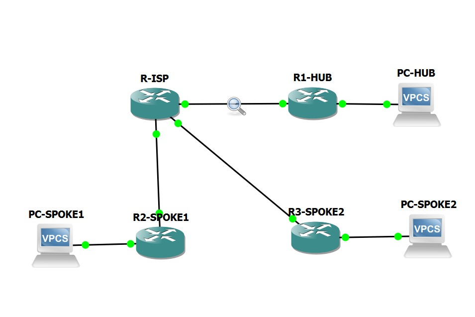
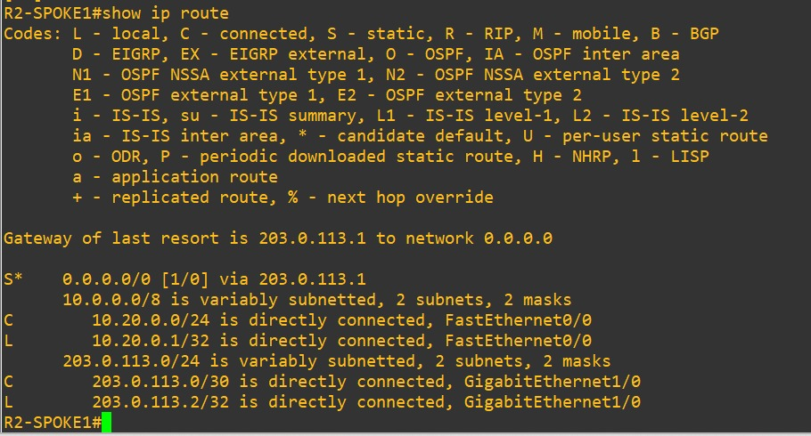
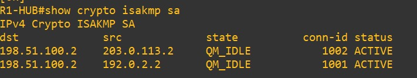
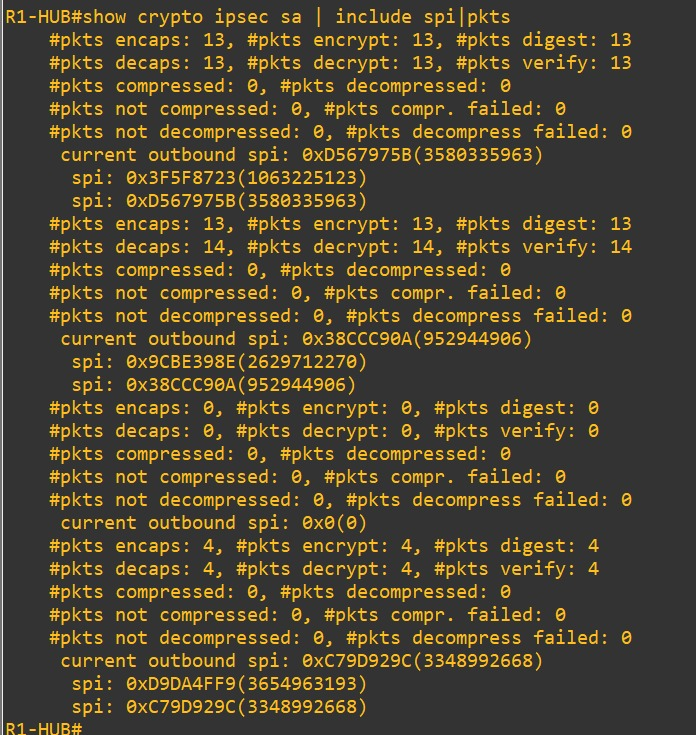
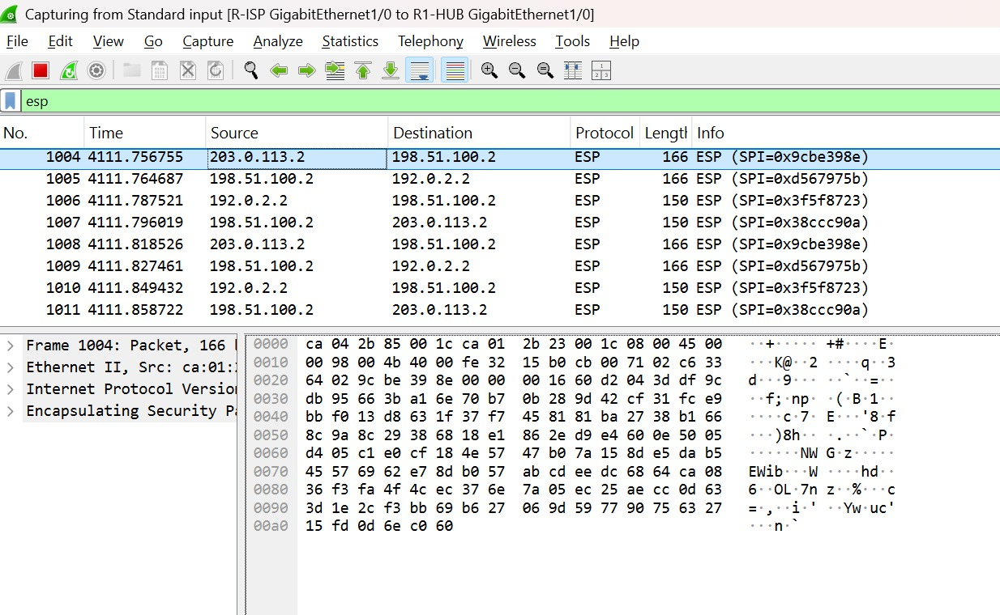
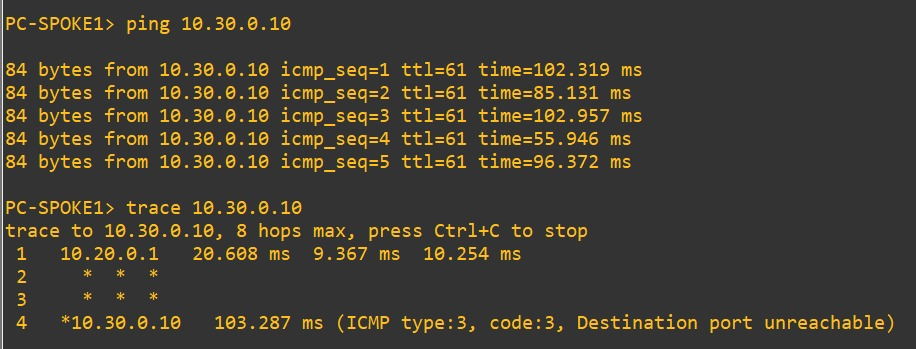

Architecture WAN sécurisée sous Cisco IOS, ségrégation stricte Underlay/Overlay, routage de transit inter-agences (Hairpinning) et audit spectral trame par trame sous Wireshark.
Dans les architectures de réseaux d'entreprise étendus, l'interconnexion de plusieurs sites distants pose une double contrainte : préserver la stricte confidentialité et l'intégrité des flux d'entreprise sans pour autant dépendre du coût prohibitif des liaisons spécialisées privées (lignes louées MPLS pures). L'exploitation des accès Internet banalisés via des tunnels chiffrés IPsec s'impose comme le standard de fait de l'industrie.
Le défi majeur relevé dans ce projet réside dans l'aiguillage du trafic transverse inter-agences (Spoke-to-Spoke) : comment permettre à deux agences distantes de dialoguer de manière étanche sans devoir déployer un maillage complet de tunnels directs (Full Mesh), lourd en ressources processeur et complexe à administrer ?
L'infrastructure repose sur une topologie en étoile où le concentrateur R1-HUB localisé au Siège fédère les liaisons WAN sécurisées avec R2-SPOKE1 et R3-SPOKE2, à travers un routeur opérateur simulant le réseau étendu Internet (R-ISP).

| Équipement | Interface | Rôle Fonctionnel | Adresse IP | Sous-Réseau |
|---|---|---|---|---|
R-ISP |
Gi1/0 • Gi2/0 • Gi3/0 | Cœur de Transit FAI Public | 198.51.100.1 / 203.0.113.1 / 192.0.2.1 | /30 Point-à-point |
R1-HUB |
Gi1/0 (WAN) • Fa0/0 (LAN) | Concentrateur IPsec Central | 198.51.100.2 | 10.10.0.1 | WAN /30 | LAN 10.10.0.0/24 |
R2-SPOKE1 |
Gi1/0 (WAN) • Fa0/0 (LAN) | Passerelle Agence 1 | 203.0.113.2 | 10.20.0.1 | WAN /30 | LAN 10.20.0.0/24 |
R3-SPOKE2 |
Gi1/0 (WAN) • Fa0/0 (LAN) | Passerelle Agence 2 | 192.0.2.2 | 10.30.0.1 | WAN /30 | LAN 10.30.0.0/24 |
Principe d'étanchéité de la Gateway of Last Resort : Afin d'interdire toute fuite de paquets d'entreprise en clair, aucun protocole de routage dynamique privé (OSPF, EIGRP) n'est injecté sur les liaisons FAI. Les passerelles disposent uniquement d'une route statique candidate par défaut (0.0.0.0/0) pointant vers le FAI. Si un paquet applicatif interne n'est pas intercepté et chiffré par l'ACL IPsec, il est transmis à l'opérateur qui le détruit automatiquement faute de route privée correspondante.

Le déploiement met en œuvre une négociation IKEv1 en deux étapes :

QM_IDLE / ACTIVE.
L'inspection fine de la table de commutation matérielle IPsec (show crypto ipsec sa) démontre la parfaite santé opérationnelle de la topologie :

Pour certifier l'absence de fuite d'information sur le cœur public opérateur, une capture réseau a été instrumentée sur la liaison physique reliant R1-HUB à R-ISP.
L'analyse de la trace met en évidence le transit complet en épingle à cheveux (Hairpinning) lors d'un échange entre Agence 1 et Agence 2 :
R2-SPOKE1 expédie le paquet chiffré au Hub (203.0.113.2 → 198.51.100.2, Inbound SPI 0x9cbe398e).R1-HUB déchiffre la charge utile, consulte sa FIB interne, ré-encapsule et ré-expédie vers R3-SPOKE2 (198.51.100.2 → 192.0.2.2, Outbound SPI 0xd567975b).0x0020 de la trame n°1004, le champ SPI correspond exactement aux 4 octets 9c be 39 8e décodés par la pile protocolaire.
La validation finale est effectuée directement entre les stations de travail d'extrémité PC-SPOKE1 (10.20.0.10) et PC-SPOKE2 (10.30.0.10).

ttl=61 atteste de la traversée exacte de 3 passerelles de routage : R2-SPOKE1, puis R1-HUB pour le relais, puis R3-SPOKE2 pour la livraison finale.* * *) lors du trace confirment que l'opérateur FAI est incapable d'inspecter les préfixes internes ou de renvoyer des messages d'erreur ICMP en clair.type:3, code:3, Destination port unreachable, signifiant que le paquet a traversé l'intégralité des tunnels chiffrés et atteint sa cible.Bien que robuste et éprouvée, l'architecture déployée par Crypto Maps statiques (Policy-Based VPN) atteint ses limites lors d'un passage en production à très grande échelle :